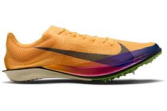
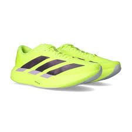
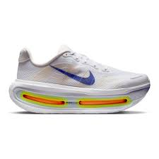

When I first started running, I absolutely despised it. I didn’t know how people would do something as excruciating as running. But I kept at it. The trick to running for a long time is to pace yourself. You don’t want to start an 80-minute run at your mile pace because the entire run will be ruined. After about a week of running, I was completely addicted. I would run five to six days a week. On days when I had to skip running for robotics, I would feel horrible. Whenever I finish a run, I always get a great sense of accomplishment. It is also important to have a good workout to ensure progression in speed. My special event is the 1600m, so on Saturdays I do “10x200s”. This means I run 200 meters at my goal mile pace 10 times, with a 75-second rest. However, not having the right running shoes can cause you to despise running like I used to and can also lead to injury. Make sure to go to Fleet Feet or Road Runner to get a proper pair of running shoes.
| Shoe Name | What It's Good For |
|---|---|
| Nike Vomero(Latest) | Easy Miles and Recovery Days |
| Adidas Adizero Evo SL | Fast Tempo Runs and Track Workouts |
| Nike Dragongfly 2 Elite | Race Day On the Track |


